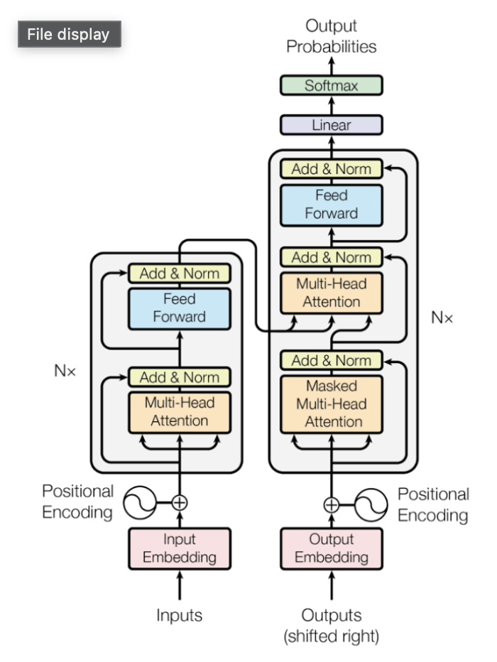

CSS 366 · Lecture 3 — Review
Starting point: the 'original' transformer
?
Why is attention better than RNN?
?
Why do we need positional encoding?
?
Which types of positional encodings exist?
?
What are residual connections?
?
What is layer norm? Why do we do it?
?
What is the purpose of the Multi-Head Attention block?
?
What is the purpose of the Feed-Forward block?